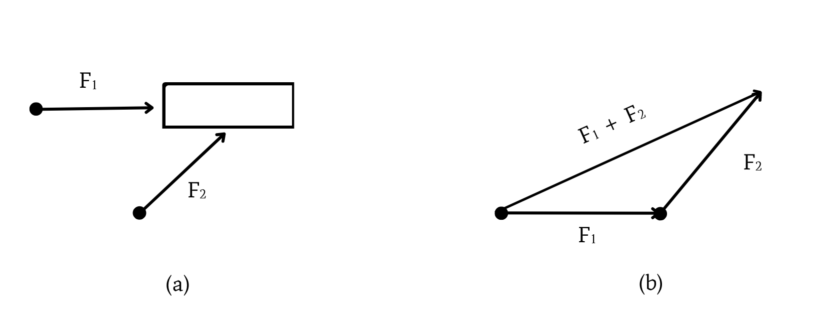
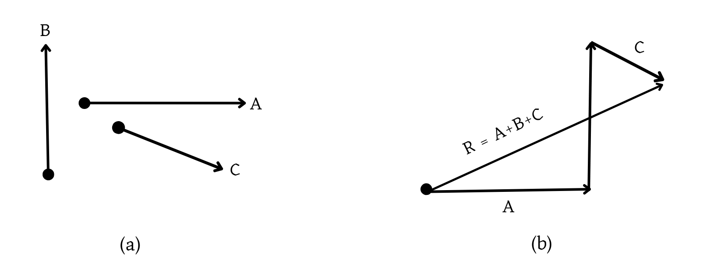
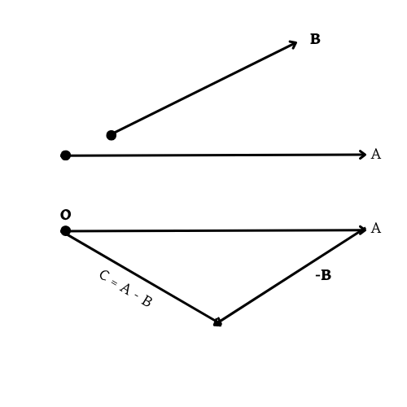

Metode poligon disebut juga metode segi banyak. Cara melukis penjumlahan dua vektor
atau lebih dengan efisien adalah melalui metode poligon. Pertama,
lukis salah satu vektor secara berurutan, lukis vektor kedua
dengan titik tangkapnya di ujung vektor pertama, dan lukis vektor ketiga
dengan titik tangkapnya di ujung vektor kedua, demikian seterusnya
sampai semua vektor sudah dilukis. Jumlah semua vektor (atau vektor resultan)
adalah vektor yang berararh dari titik tangkap vektor pertama menuju ke ujung vektor terakhir.
Pada Gambar 5 ditunjukan penjumlahan vektor $F_1+F_2$ dan
pada Gambar 6 ditunjukan vektor resultan R = A + B + C.

Gambar 5 Melukis penjumlahan dua vektor dengan metode polygon.
$(a)$ Dua vektor gaya yang berbeda arah $(b)$ Melukis vektor resultan gaya $F_1 + F_2$

Gambar 6 Melukis vekotr resultan dari tiga vektor
dengan metode polygon. $(a)$ Tiga vektor perpindahan dengan arah yang berbeda.
$(b)$ Melukis vektor resultan perpindahan $R = A + B + C$ dengan vektor $A$ dilukis terlebih dahulu
Cara melukis selisih vektor pada prinsipnya sama seperti cara melukis penjumlahan.
Misalnya, selisih dua vektor A dan B ditulis $C = A – B$ dapat kita tuliskan
sebagai $C = A + (-B)$. Artinya, selisih antara vektor A dan B sama saja
dengan penjumlahan vektor arah A dan –B dengan vektor –B adalah vektor yang
berlawanan arah dengan vektor B. Jadi, untuk melukis $C = A-B$, pertama kita lukis
dahulu vektor A, kemudian lukis vektor –B (vektor yang diperoleh
dengan membalik arah vektor B) dengan pangkalnya berada di ujung vektor A.
Selisih vektor $C = A-B$ adalah anak panah
yang menghubungkan pangkal A ke ujung –B, seperti pada Gambar 7.

Gambar 7 Selisih antara vektor
$A$ dan $B$, yaitu $C = A – B$
Agar memahami lebih jelas mengenai
penjumlahan vektor menggunakan metode poligon, silahkan simak video dibawah ini.


 =
+
+
=
+
+
 =
-
+
=
-
+
 =
+
-
=
+
-